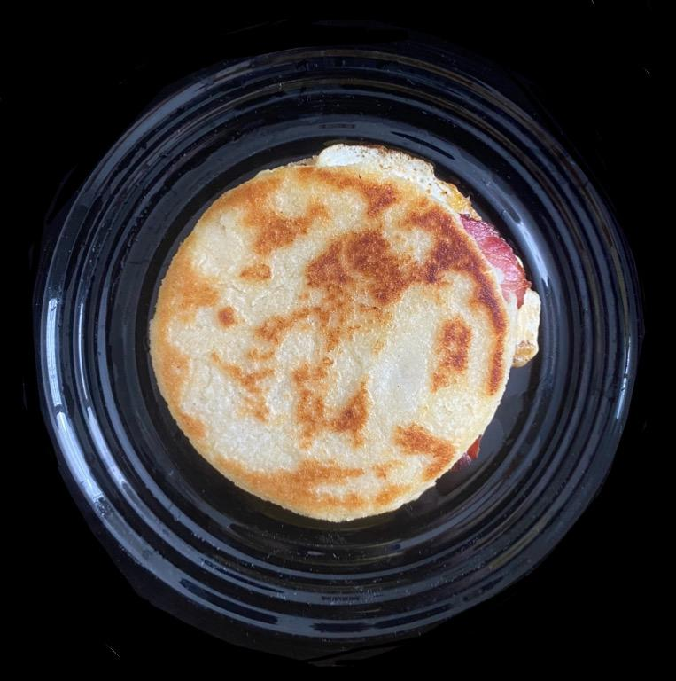

Mezcla en un bol la harina de maíz blanco con la sal y el azúcar, y ve agregando agua poco a poco hasta formar una masa suave que no se pegue mucho a las manos. Incorpora el queso, ya sea mezclándolo dentro de la masa o poniendo trozos de queso en el centro de pequeñas bolitas y cerrándolas. Forma bolas con la masa y aplánalas hasta que tengan aproximadamente 1-1.5 cm de grosor. Calienta un poco de aceite o mantequilla en una sartén a fuego medio y cocina las arepas unos 4-5 minutos por cada lado, hasta que estén doradas. Sírvelas calientes y disfruta.